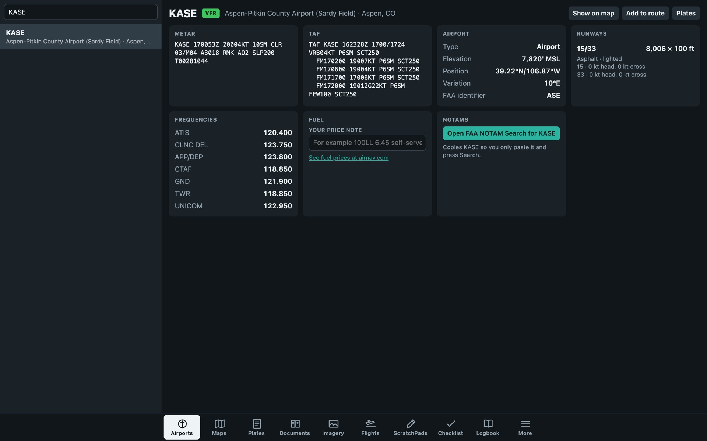

Free flight planning for pilots
Kestrel EFB puts charts, weather, routes and approach plates in one app for Mac, Windows, iPad and iPhone. Airports and weather cover the whole world.

What's in the app
Charts
FAA VFR sectional, terminal, IFR low and IFR high charts, and VFR charts for much of Europe.
Weather
METAR, TAF, animated radar, flight category dots and SIGMETs, in the US and worldwide.
Routes
Type a route with airways, SIDs and STARs. Get a NavLog with winds aloft, time and fuel.
Airports
About 57,000 airports with runways, crosswind, frequencies and current weather.
Plates
Current FAA approach plates and airport diagrams for US airports, placed on the map.
Terrain
Terrain near your altitude turns yellow, then red. Fly the route in 3D before you go.
Check the weather for a flight
Enter the airport you leave from and the one you fly to. You get the distance and each airport's current weather.
Use four-letter ICAO codes, such as KJFK or EGLL. Weather from aviationweather.gov.
First, plan the route
Enter airports, airways, a SID or a STAR. The app works out distance, time, fuel and wind.
